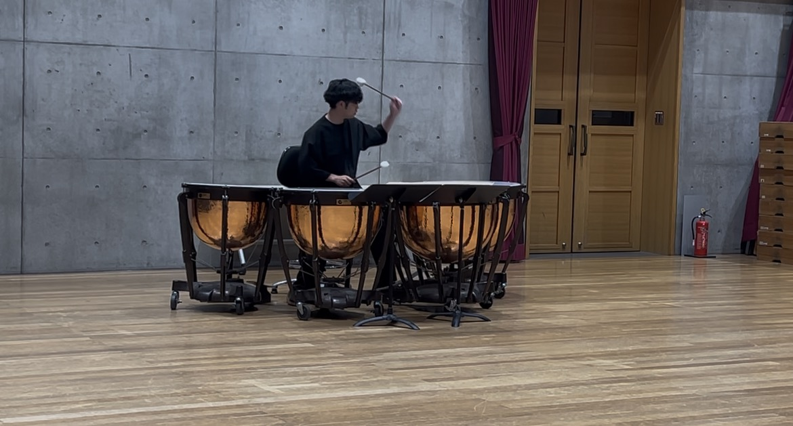
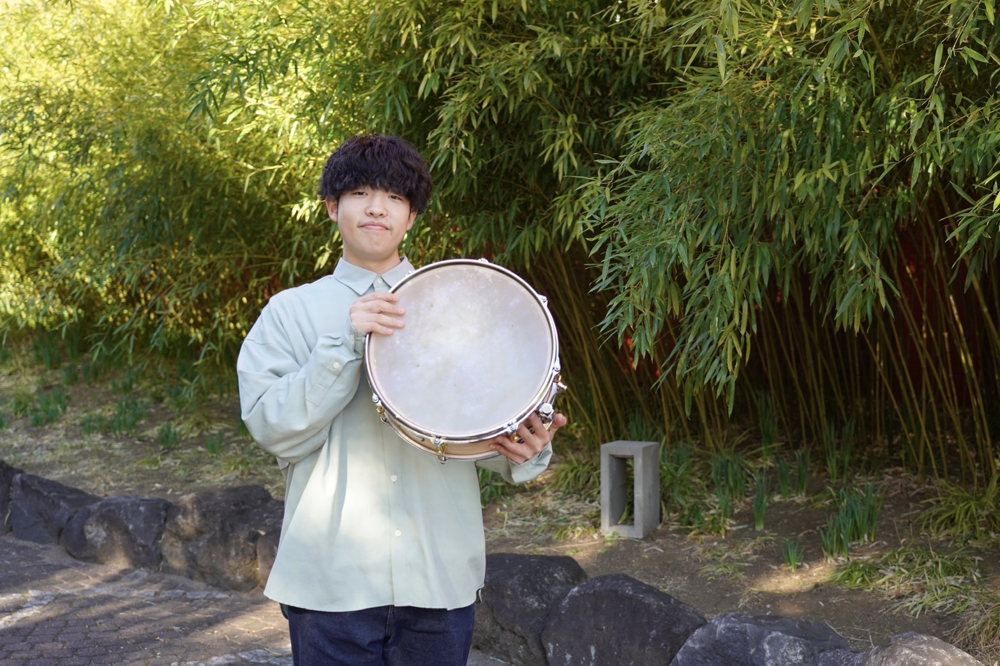

埼玉県さいたま市出身。9歳より打楽器を始める。埼玉県立伊奈学園総合高等学校を経て、洗足学園音楽大学を卒業。現在は同大学大学院修士課程1年に在学。
オーケストラや吹奏楽を中心に演奏活動を展開するほか、中高吹奏楽部での後進の指導にもあたる。また、西洋打楽器の研鑽を積む一方で、スティールパンやガムラン、マーチングパーカッション、和太鼓なども学ぶ。
Born in Saitama, Japan. Began playing percussion at the age of nine. After attending Ina Gakuen Comprehensive High School, he graduated from Senzoku Gakuen College of Music. He is currently a first-year graduate student at Senzoku Gakuen College of Music.
He is active as a percussionist and timpanist in various orchestras and wind ensembles, while also teaching junior high and high school students. In addition to classical Western percussion, he has studied steelpan, gamelan, marching percussion, and wadaiko.